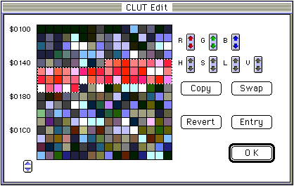

★Graphic Tools Guide
★MAP/SCREENエディタユーザーズマニュアル
★Graphic Tools Guide
★MAP/SCREENエディタユーザーズマニュアル
▲
戻る｜
■
MAP/SCREENエディタユーザーズマニュアル
■パレット編集
- Palette Editウインドウは、パレットデータの編集を行います。キャラクタデータがパレットモード(16色/256色)の場合、編集可能となります。
長方形選択ツール・選択ツールで範囲を指定し、パレットデータの変更を行います。

▲
戻る｜
■
★Graphic Tools Guide
★MAP/SCREENエディタユーザーズマニュアル
Copyright SEGA ENTERPRISES, LTD., 1997